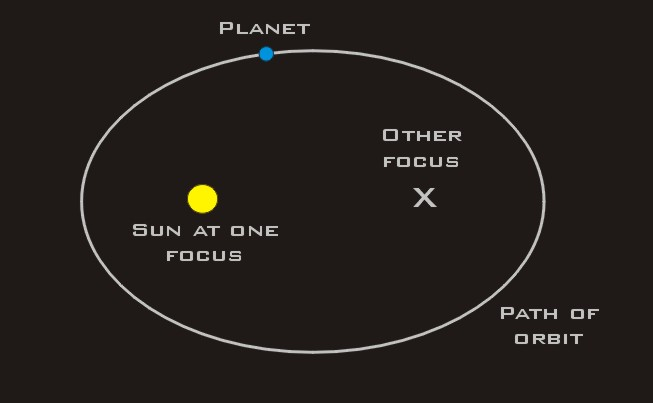
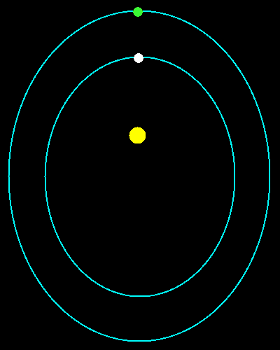
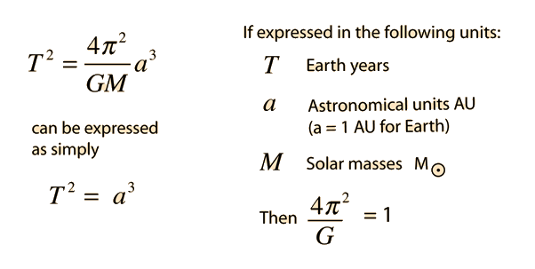

Johannes Kepler
Johannes Kepler
Kepler developed the three laws of planetary motion. In 1605, while studying the orbit of Mars, Kepler developed the first two laws. It wasn't until 1619 that Kepler developed his third law of planetary motion.
Kepler's First Law: planets move in ellipses with the sun at one focus.

This disproved scientist eariler theories that planets moved in a circular obrit.
Kepler's Second Law: the radius vector describes equal areas in equal times

Planets don't move at a constant speed. Those closer to the sun orbit faster and in a wider elliptical arc than planets further from the sun.
Kepler's Third Law: the squares of the periodic times are to each other as the cubes of the mean distances. T is the period of revolution of any planet and D is its mean distance from the sun, then T squared is equal to k multiplied by D cubed, where k is a constant, which is the same for all the planets.
